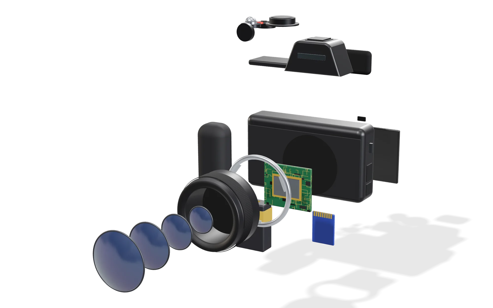
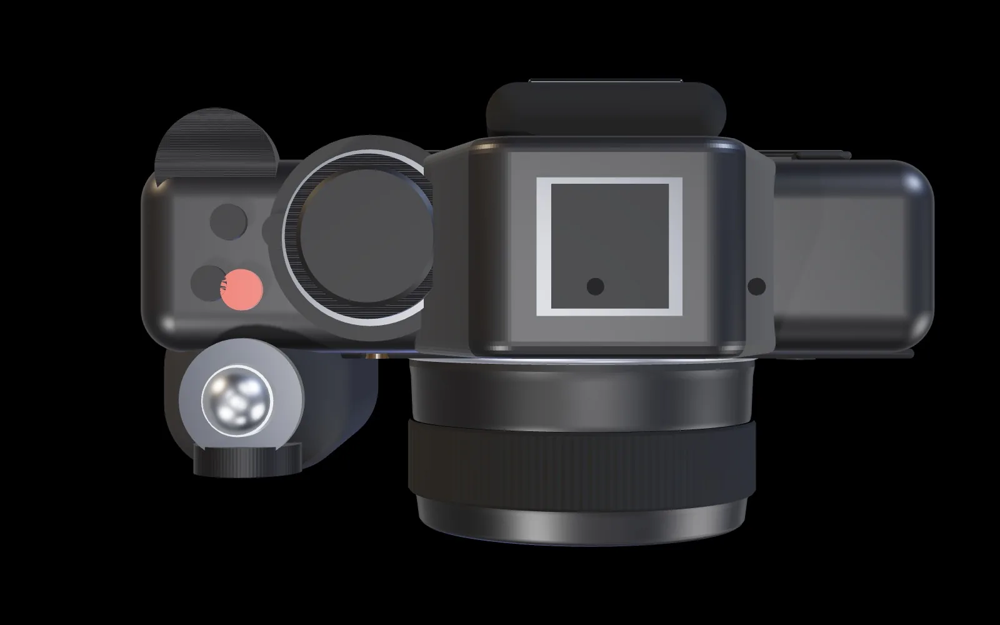
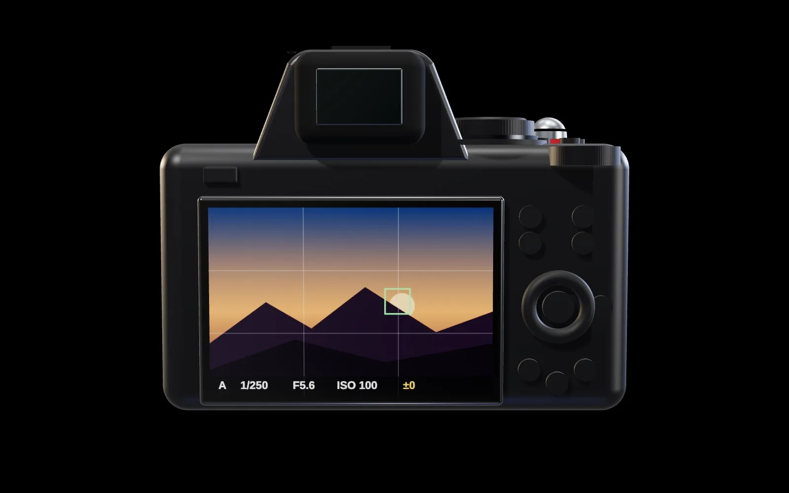
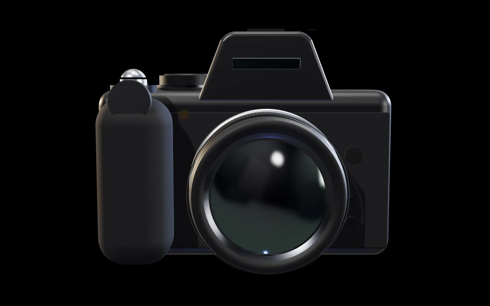

Ton appareil, pièce par pièce.
Touche un numéro : tu sais ce que c'est, à quoi ça sert, et quand t'en servir.




Appareil modélisé en 3D pour ce guide : la forme est simplifiée. L'emplacement exact de chaque commande se vérifie sur ton appareil.
Trois raccourcis à retenir
Pas besoin de tout apprendre.
La touche i
Les 12 réglages les plus utilisés au même endroit : style d'image, balance des blancs, qualité, mise au point, stabilisation, mesure… Plus rapide que MENU. Tu choisis son contenu (réglage perso f1).
Fn1 et Fn2
Maintiens et tourne une molette. Par défaut, Fn1 = balance des blancs, Fn2 = mode et zone de mise au point. Réattribuables (réglage perso f2).
Viseur ou écran
L'appareil bascule seul vers le viseur quand ton œil approche. La touche de mode moniteur force l'un ou l'autre.